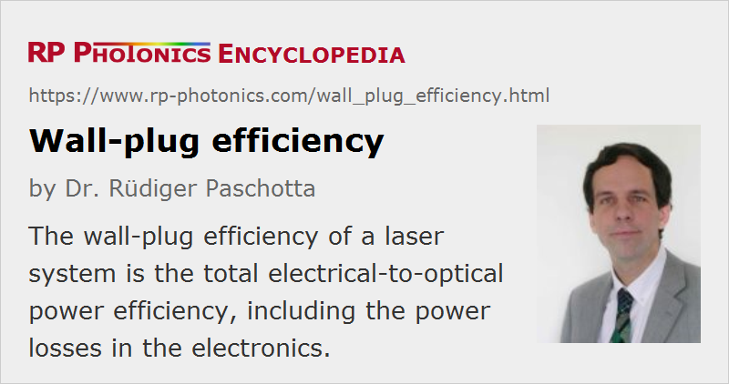

Wall-plug Efficiency
Definition: total electrical-to-optical power efficiency of a laser system
German: Steckdosen-Effizienz
Units: %
How to cite the article; suggest additional literature
Author: Dr. Rüdiger Paschotta
The wall-plug efficiency of a laser system is its total electrical-to-optical power efficiency, i.e., the ratio of optical output power to consumed electrical input power. Taking the term seriously, the electrical power should be measured at the wall plug, so that this efficiency includes losses in the power supply and also the power required for a cooling system, which can be significant for high-power lasers. However, it is common that the wall-plug efficiency is calculated based on the electric power delivered to the laser diodes (e.g. in a diode-pumped solid-state laser system), ignoring losses in power supplies (which can be quite small for modern switched-mode power supplies).
Using the term in this common way, values of the order of 25% result for many diode-pumped laser systems (→ all-solid-state lasers), e.g. Nd:YAG lasers. Even values above 30% are possible, e.g. with thin-disk lasers based on Yb:YAG and efficient laser diodes. It is to be expected that within the next few years laser diodes could become even more efficient, further raising the wall-plug efficiency of such systems. Pure laser diode systems can reach the highest efficiencies, sometimes well above 60%, but they can not always be directly used, e.g. because of their poor beam quality and their inability to generate intense pulses. When using a high-power fiber laser as a brightness converter, one can obtain high output beam quality and (to some extent) intense light pulses, while the overall wall-plug efficiency can in the best cases be of the order of 50%. On the other hand, argon ion lasers, and even more so titanium–sapphire lasers and the like when they are pumped with argon ion lasers, generally have wall-plug efficiencies around or below 0.1%.
Particularly for high-power lasers, a high wall-plug efficiency is a very important quality. It reduces the electrical power consumption and also the amount of heat which has to be removed. Therefore, it not only cuts down the electricity bill but also reduces the demands on electrical installations and on the cooling system, and in turn often also the size of the laser system. Even for low-power lasers, the efficiency can be important in certain application areas, where the power budget is tight. Examples are telecom devices with a large number of transmitters, and lasers for space applications.
Questions and Comments from Users
Here you can submit questions and comments. As far as they get accepted by the author, they will appear above this paragraph together with the author’s answer. The author will decide on acceptance based on certain criteria. Essentially, the issue must be of sufficiently broad interest.
Please do not enter personal data here; we would otherwise delete it soon. (See also our privacy declaration.) If you wish to receive personal feedback or consultancy from the author, please contact him e.g. via e-mail.
By submitting the information, you give your consent to the potential publication of your inputs on our website according to our rules. (If you later retract your consent, we will delete those inputs.) As your inputs are first reviewed by the author, they may be published with some delay.
Bibliography
| [1] | N. P. Barnes, “Solid-state lasers from an efficiency perspective”, J. Sel. Top. Quantum Electron. 13 (3), 435 (2007), doi:10.1109/JSTQE.2007.895280 |
| [2] | W. Koechner, Solid-State Laser Engineering, 6th edn., Springer, Berlin (2006) |
See also: solid-state lasers, all-solid-state lasers, diode-pumped lasers, slope efficiency, lamp power supplies
and other articles in the category lasers
|  |
If you like this page, please share the link with your friends and colleagues, e.g. via social media:
These sharing buttons are implemented in a privacy-friendly way!